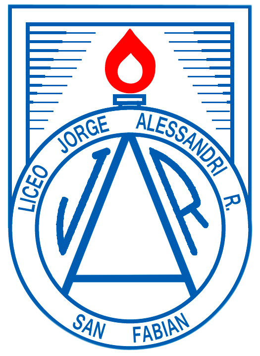
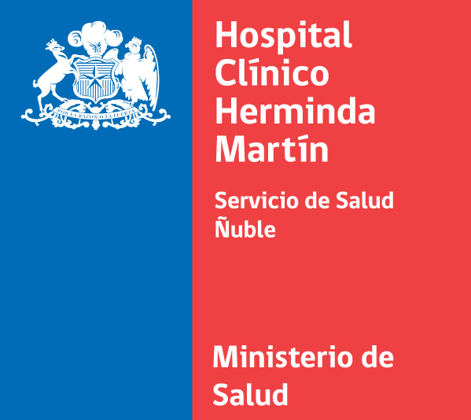

Hola, soy Fernando Sepúlveda. Soy Tecnólogo Médico de profesión, pero siempre me ha gustado el área de la programación y la computación en general, actualmente estoy en proceso de formación, siendo estudiante en la academia Desafío LATAM. Me gustaría proyectar mi carrera profesional hacia el área informática y seguir aprendiendo sobre nuevos lenguajes y tecnologías
Liceo ubicado en la región de Ñuble, Chile. Aquí fué donde completé toda mi enseñanza básica y media. Plan de estudio enfocado en el área científico - humanista
En mis años de estudio universitario, participé en ferias cientificas y difusión de la carrera, además fui miembro de la directiva estudiantil durante dos años. Me especialicé en el área de Morfofisiopatología y Citodiagnóstico
.gif)
Actualmente y motivado por mis intereses, me encuentro estudiando el programa Full Stack de la academia, donde hemos visto HTML y CSS de forma básica
Mi primera experiencia laboral como tecnólogo médico, aquí me encargue de procesar exámenes de tipo biopsia y realizar tinciones especiales para el diágnostico
Aquí realizé labores como Tecnólogo de screening de exámenes de papanicolau, ayudando en la detección temprana del cáncer cervico - uterino . También realizé labores de calidad y trazabilidad de muestras
Lugar donde desempeño mi profesión actualmente, analizando muestras de papanicolau provenientes de todos los centros de salud de la región de Antofagasta, Chile.